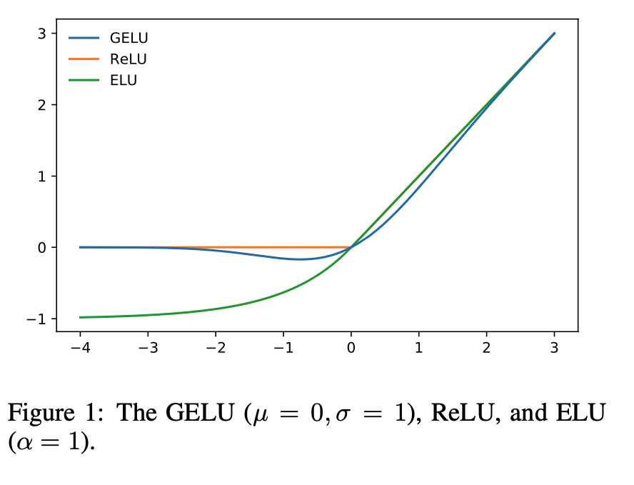

1. Read the title and make an opinion of what’s in the paper (e.g., the area, the task)
Year: 2016
GAUSSIAN ERROR LINEAR UNITS (GELUs)
I primarily have heard of the GELUs from transformer papers using these as the activation functions. I’m excited to see what makes them useful in ViT applications.
2. Read the abstract well and form a hypothesis of
- What’s new in the paper?
- Do you have a clear overview about what the paper is all about?
We propose the Gaussian Error Linear Unit (GELU), a high-performing neural network activation function.
This is a pretty short abstract, and its clear contribution is in a new activation function. When ReLU was started to be used more often, it seems like it was proven empirically, because it is simply hard to reason why these activation functions are successful, thus I’m expecting this paper to argue in favor of GELU based on empirical evidence alone. Let us see.
The GELU activation function is , where [is] the standard Gaussian cumulative distribution function.
I am not very familiar with the Gaussian cumulative distribution function, but I expect there will be some explanation.
The GELU nonlinearity weights inputs by their value, rather than gates inputs by their sign as in ReLUs
It does appear to compete with the current activation favorite the ReLU. Here it seems important that it weights inputs by their value, but that is similar to sigmoid and tanh, so it must have some benefit compared to them as well.
We perform an empirical evaluation of the GELU nonlinearity against the ReLU and ELU activations and find performance improvements across all considered computer vision, natural language processing, and speech tasks.
As expected there is empirical evidence for the use of this new activation. It seems to me that it took a decent amount of time before it started to become popular, and I’d love to see a graph over time of its use.
3. Look at the images and extract a set of “questions” about what is not clear about their method from the images. Now your job is to answer these questions by reading the paper.
We motivate our activation function by combining properties from dropout, zoneout, and ReLUs
Looking at figure 1, it is interesting to consider the impact of the GELU. I am unfamiliar with ELU, but it looks to be a smooth version of the leaky ReLU.

Figure 2 and 3 show that the benefit of GELU is certainly tight. This doesn’t seem to be an improvement on orders of magnitudes. However, the graph on the top right shows that the GELU is much faster than ELU on bottoming in performance, being potentially 5x faster (at least on MNIST).
4. Read the method aiming to answer your “questions” about the paper. Focus on understanding only the things relevant for the story (i.e., to understand the contribution).
We merge this functionality by multiplying the input by zero or one, but the values of this zero-one mask are stochastically determined while also dependent upon the input.
So this formulation is a input dependent dropout.
we can multiply the neuron input by , where
If you look at figure 1, you can visualize a Gaussian distribution ‘wrapped’ along the ReLU formulation, so at the extreme ends of values, it is guaranteed to follow the ReLU distribution, but at values centered around 0 with a standard deviation of 1 will be more smooth. This is quite interesting.
They formulate an approximation to GELU as
5. Read the experiments to convince you that the show results are caused by their claim. Be aware that the experiments highlighted are the best scenarios and are fully hyper-parameter tuned.
They show a number of results, all with the GELU being marginally better than ELU and ReLU. These are in vision tasks, like CIFAR and MNIST as well as POS tagging, and speech recognition. It could be argued these are hand picked examples, but the GELU is better in all cases shown. It also appears consistently faster in the number of epochs to arrive to a best validation error.
6. Make sure you answered all your questions. Did the authors convince you that their story has the effect that they claim?
They describe sufficiently fast and easy approximations given in section 4, and they used the first implementation in their experiments.
To verify their math, I plotted their approximations given and they do a good job of reproducing the GELU plot.